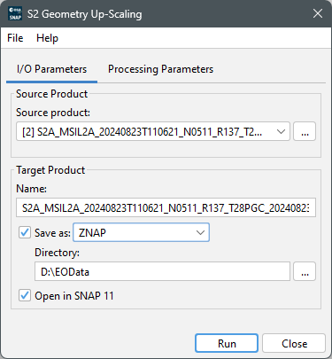
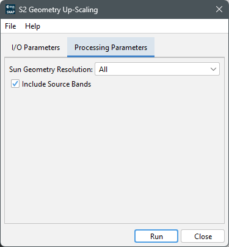

|
|
EOMasters Toolbox | |
This processor GUI consists of two tabs. The first tab, I/O Parameters, allows to specify the input and
output parameters. The second tab, Processing Parameters, allows to specify the parameters for the
processing.

This defines the source product on which the processing is performed. Either select one of the products already opened in the application or select a new one by opening a product selection dialog. See the input requirements on the product.
Name - Used to specify the name of the target product. By default, it is set to the name of the source product with the suffix '_s2geom' appended.
Save as - Used to specify whether the target product should be saved to the file system. The dropdown list provides a list of available file formats. The text field shows the path to the directory where the processing result will be saved. You can edit the text field directly or select a directory via the '...' button.
Open in SNAP - Used to specify whether the target product should be opened in SNAP. If the target product is not saved, it is opened in SNAP automatically.

Sun Geometry Resolution - Whether all or only one of the resolutions should be generated. Value must be one of 'All', '10', '20' or '60'. Default value is 'All'. If the product is resampled to a common resolution after the geometries have be generated not all of these need to be generated.
Include Source Bands - Whether to include source data or only generate geometry bands Default value is 'True'.
If you want to generate a product containing only the geometry bands, set this to false. Such a product
can be merged with other products of the same scene. For example standard L1C, L2A or a Theia L2a products.